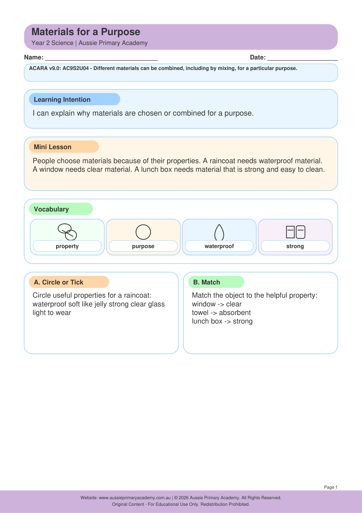

Year 2 · Science · Chemical Sciences · Free Printable
Materials for a Purpose
Compare material properties and choose suitable materials for everyday purposes.
Resource Details
- Year level: Year 2
- Subject: Science
- Focus: Materials for a Purpose
- Resource type: Free printable worksheet · PDF
- Curriculum status: Supplementary Year 2 Science resource
- Best for: Classroom practice, homework, tutoring or homeschool learning
Worksheet Preview

Learning Intention
Students will compare properties of materials and explain why particular materials are chosen for everyday objects.
Curriculum Status
Supplementary topic
This resource supports Year 2 Science learning but is not assigned a Year 2 Australian Curriculum v9.0 Science understanding code.
Teacher Notes
Provide real objects - fabric, plastic, wood, metal, glass. Test flexibility, strength, waterproof, transparency. Ask: Why is a raincoat not made of paper?
Skills Practised
- Material properties
- Comparing materials
- Design thinking
- Observing and reasoning